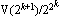

| Finding primes & proving
primality 3.2: n+1 tests and the Lucas-Lehmer test |
 |
| Home > Primality Proving > Chapter Three > n+1 Tests |
|
About half of the primes on the list of the largest known primes are of the form N-1, where N (the prime plus one) is trivial to factor, why is that? It is because there is a theorem similar to Fermat's Little theorem that we can use here--but first we must do a little ground work. Again you may skip the details and go straight to the theorem if you must, but you'll miss most of the fun!
Suppose we choose integers p and q such that p2-4q is not a square modulo n, then the polynomial x2-px+q has distinct zeros, one of which is r = (p + sqrt(p2-4q))/2, and it is easy (by induction) to show r's powers have the form
Lemma 1: rm = (V(m) + U(m) sqrt(p2-4q))/2where U and V are defined recursively by
U(0) = 0, U(1) = 1, U(m) = pU(m-1) - qU(m-2)
V(0) = 2, V(1) = p, V(m) = pV(m-1) - qV(m-2)
These are the Lucas sequences associated with p and q. A well known special case is given by letting p=1, q=-1, then U(m) is the sequence of Fibonacci numbers.
These Lucas sequences have many properties (such as the following) which make them very fast to calculate (in a way analogous to how we calculate xm by repeated squarings):
U(2m) = U(m)V(m)
V(2m) = V(m)2-2qm
(See [BLSTW88] or better [Ribenboim95, chpt2, iv].)
Now we are ready to state our analog to Fermat's Little Theorem (keep lemma 1 in mind while reading this theorem):
Lemma 2: (With p, q and r as above so p2-4q is not a square mod n), let 2r ≡ a + b sqrt(p2-4q) (mod n) for integers a and b of the same parity. If n is prime, then 2rn ≡ a - b sqrt(p2-4q) (mod n).
That's too messy, lets restate it using our sequence U (the coefficient of sqrt(p2-4q)) from above. To do this notice that lemma 2 essentially says that rn is the complex conjugate of r1 modulo n, so multiply them together.
Lemma 3: (With p, q as above) if n is prime, then U(n+1) ≡ 0 (mod n).
Now we can restate theorem 1 for the plus side:
Theorem 4: Let n > 1 be an odd integer. If there is an integer d for which the Jacobi symbol (d|n) = -1 and for every prime factor r of n+1 there are relatively prime integers p and q with p2-4q = d such thatthen n is prime.
- U(n+1) ≡ 0 (mod n), and
- U((n+1)/r) is not 0 (mod n);
Note that you may use different p's and q's as long as the discriminant d does not change. One way to alter p and q (but not d) is to replace (p,q) by (p+2,p+q+1).
An interesting example of this test is found by setting S(k) = 
Lucas-Lehmer Test (1930): Let n be an odd prime. The Mersenne number M(n) = 2n-1 is prime if and only if S(n-2) ≡ 0 (mod M(n)) where S(0) = 4 and S(k+1) = S(k)2-2.
(The proof of sufficiency is found on a separate page.) This test is exceptionally fast on a binary computer because it requires no division. It is also so easy to program that in 1978 two high school students, with little understanding of the mathematics behind the test, were able to use it to find the then record Mersenne prime 221701-1 (see our page on Mersennes).
It is also easy to give a test paralleling Pocklington's theorem using Lucas sequences. This was first done by D. H. Lehmer in 1930 (in the same article he introduced the Lucas-Lehmer test: [Lehmer30]). See [BLSTW88] or [BLS75] or ... for more information on these tests.
Joerg Arndt notes that a striking (but computationally useless) way to state this test is as follows:
Theorem: p=2n-1 is prime if and only if p divides cosh(2n-2log(2+sqrt(3))).
Lucas also stated one case of his theorem in this manner.
|